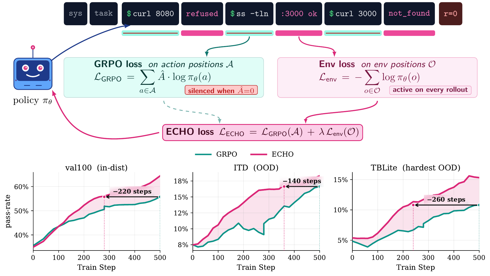
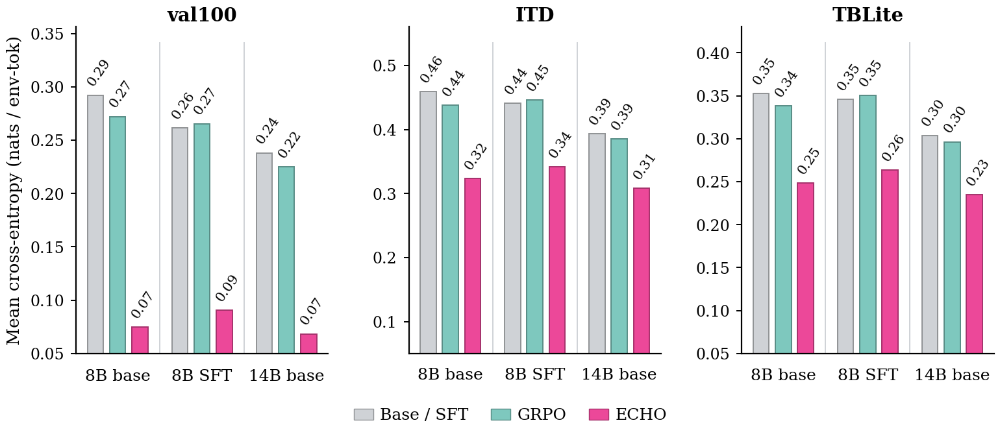
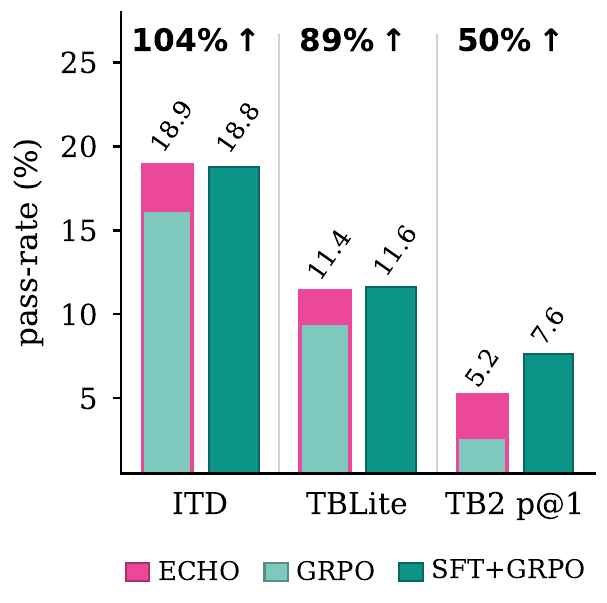

ECHO：让 terminal agent 在 RL 时顺带「白嫖」一个 world model
ECHO: Terminal Agents Learn World Models for Free
①开源贡献 Open-source Artifacts
本文已开源训练代码（microsoft/echo-rl，MIT License）：以 SkyRL 为底层 RL 栈，仓库额外提供 terminal-agent 集成、ECHO 的 environment-prediction loss 实现（echo_rl/world_modeling/）、GRPO 与 ECHO 两套示例 config、以及一个对 SkyRL 的 hook patch。模型权重与本文自建的训练任务语料/PyTerm 等数据集未见发布；但论文复用的多数公开产物（OpenThinker-Agent-v1-SFT、Endless Terminals、OpenThoughts 系列数据、TerminalBench-2.0、Harbor/Terminus-2 harness）本身在 Hugging Face / GitHub 上是开放的。
| 类型 | 是否开源 | 内容 / 链接 |
|---|---|---|
| 代码 Code | ✔ | github.com/microsoft/echo-rl — 基于 SkyRL 的 terminal-agent RL 训练栈 + ECHO auxiliary loss + 示例 config，MIT License。 |
| 模型权重 Weights | ✘ | 未见发布（论文训练的 Qwen3-8B/14B、OT-SFT 的 ECHO checkpoint 未提供下载）。 |
| 数据集 Dataset | 部分 | 本文自建语料（8870 tasks）、PyTerm（928 合成任务）未单独发布；但其来源/复用的公开数据可下载：Endless Terminals、OpenThoughts-Agent-v1-RL、OpenThoughts-TBLite。 |
| 环境 / Benchmark | ✔（第三方） | 评测用 TerminalBench-2.0 + Harbor / Terminus-2 harness（均第三方开源）；起始 policy OpenThinker-Agent-v1-SFT 公开。 |
| 项目主页 / Demo | ✘ | 未见独立项目主页（信息以 arXiv + GitHub README 为主）。 |
②研究动机与贡献 Motivation & Contribution
背景与问题
CLI/terminal agent 是 language model 目前最接近「embodied 具身」的设定：模型发出一条 bash 命令，terminal 执行它，并把后果（stdout、stderr、exit code、文件内容、日志、stack trace）作为下一个 observation 返回。理论上这是一个信息极其丰富的反馈流，但主流 agent RL 把它当成了纯 context 丢掉了。具体而言，GRPO（Shao et al., 2024）这类做法只在 action token 上施加 policy-gradient loss，并由稀疏、延迟、二值的 outcome-level reward（任务最终单元测试过/不过）驱动；observation token 虽然进了 forward pass、也会影响后续动作，但本身不进 loss。
这个问题在 terminal-agent 训练里尤其严重：作者在 Qwen3-8B 设定下观察到，常常不到 15% 的 on-policy rollout 能解出任务。在 GRPO 里，全 0 的 group 没有 reward 对比、根本不产生有效梯度；混合 group 里失败轨迹也只拿到一个轨迹级负信号——于是学习几乎全靠那少数成功 rollout，样本效率极低。可这些失败轨迹远非毫无信息：它们装着 agent 真实运行得到的 file listing、build error、config 内容、grep 结果、stack trace……「每一个 terminal token 都进了模型的前向计算，却没有一个进 loss」。
本文的切入点
作者借用语言建模里一条由来已久的直觉——「会预测就意味着会理解」（Sutskever 的说法：把 next token 预测好「意味着你理解了产生这个 token 的底层 reality」）。把它搬到 agent 上：terminal 输出是 container 真实状态的一个 lossy 文本投影，它暴露了 stdout/stderr/exit code/文件内容/trace，但看不到完整文件系统、进程树、隐藏的任务状态。要想把这些 observation 预测准，policy 就必须追踪自己命令带来的潜在后果：哪些文件被创建、哪些假设失败了、哪些测试坏了、下一步可能暴露什么状态。一个能把 terminal 输出预测好的 policy，在一个小而真实的意义上，就是一个「懂 terminal」的 policy——也就是一个 world model。
核心贡献
- 把 terminal 输出变成监督信号。提出一个 on-policy 的 hybrid objective：在 GRPO 的 action-token loss 之外，对 terminal 输出（stdout / 报错 / 文件 / 工具 trace）token 加一项 cross-entropy 监督。两项 loss 共享同一次 forward pass，不需要 teacher、不增加任何额外 rollout。（§3）
- 稳定优于 GRPO。在 Qwen3-8B、OpenThinker-Agent-v1-SFT、Qwen3-14B 三个起始 policy 上，内部评测和 TerminalBench-2.0 全面提升，8B 与 14B 的 TB2 pass@1 几乎翻倍。（§5.1）
- 确实学到了 terminal dynamics。在更强的 Qwen3-32B 生成的 held-out off-policy 轨迹上，ECHO 大幅降低 environment-token cross-entropy，而单独 GRPO 几乎不变——说明它真的学会了「预测 terminal 会怎么回应」，且能迁移到不是自己生成的轨迹。（§5.2）
- 减少对专家示范的依赖。从 base Qwen3-8B 出发，ECHO 在不使用任何 ∼15k 专家示范的前提下，内部评测追平 expert-SFT+GRPO，TB2 上补回约一半 gap。（§5.3）
- verifier-free 自我提升。在某些设定下，仅靠 environment-prediction loss（关掉 verifier 与 policy gradient），policy 也能在没见过的 OOD 任务上继续变好。（§5.5）
③方法 Method
一条 terminal-agent rollout 的结构是：[sys][task] 之后交替出现 [action₁][obs₁][action₂][obs₂]…[actionₖ][obsₖ]。记 $A$ 为 assistant-action token 的位置集合、$O$ 为 environment-observation token 的位置集合。标准 GRPO 在整条序列上算 log-prob（每个动作都依赖之前的 observation），但 policy-gradient loss 只施加在 $A$ 上；$O$ 里的 token 被「conditioned on」，却拿不到任何直接训练信号。ECHO 做的事，本质上就是换一个 loss mask：把已经算好的 logits 在 $O$ 的位置也收集起来，加一项预测它们的 cross-entropy。

ECHO 目标函数
整体目标是 GRPO 的 policy-gradient loss 与一项 environment-prediction loss 的线性组合：
$$\mathcal{L}_{\text{ECHO}}(\theta) \;=\; \mathcal{L}_{\text{GRPO}}(\theta;\,A) \;+\; \lambda\,\mathcal{L}_{\text{Env}}(\theta;\,O').$$其中 $\theta$ 是 policy 参数，$\lambda$ 是混合权重，$A$ 是 action token 位置，$O'\subseteq O$ 是被选作训练目标的那一部分 observation token（下面会讲为什么不是整个 $O$）。
第一项——GRPO（只回顾要点）。对 prompt $x$、采样到的一组 rollout $\{y^{(i)}\}_{i=1}^n$、二值 reward $r^{(i)}\in\{0,1\}$，每条 rollout 得到一个 group 内归一化的标量 advantage $\hat A^{(i)}$，均匀地施加到它的 action token 上，配合 clip 的 importance ratio $\rho^{(i)}_t$：
$$\mathcal{L}_{\text{GRPO}}(\theta;A)=-\frac{1}{\sum_i|A^{(i)}|}\sum_i\sum_{t\in A^{(i)}}\min\!\Big(\rho^{(i)}_t\,\hat A^{(i)},\ \mathrm{clip}(\rho^{(i)}_t,1-\epsilon,1+\epsilon)\,\hat A^{(i)}\Big).$$关键就是：当一个 group 全 0（无成功 rollout）时没有 reward 对比，整组贡献为零；这就是稀疏 reward 浪费样本的根源。
第二项——Environment-Prediction Loss（本文新增）。就是一项在 observation token 上的、长度归一化的 next-token cross-entropy：
$$\mathcal{L}_{\text{Env}}(\theta;O')=-\frac{1}{Z}\sum_{t\in O'}\log p_\theta(x_t\mid x_{选哪些 observation token 当目标（$O'$）
一条 observation message 内部其实有结构：前面是 harness 的 WARNINGS: 块（当上一个 tool call 解析失败或违反格式约束时，规则触发的提示），后面才是 <command_output>…</command_output> 这段真正的命令输出（env token）。ECHO 把 $O'$ 设为「只 env token、剔除 warning 前缀」。理由是经验性的：warning token entropy 很低，模型大约 60 个 training step 就背下来了，之后 warn-only 配置几乎没有有用梯度；而 terminal-output token 编码的是任务相关的反馈（文件名、测试失败、字节数、错误格式），在整个训练过程中持续提供信息梯度。Appendix A 的曲线印证：warning CE 在约 60 步内从 ∼5.6 nats 掉到 <0.05 nats，而 env CE 稳定在 0.05–0.10 nats（真实 terminal 输出的不可约 entropy）持续提供梯度。
调 $\lambda$
作者扫了 $\lambda\in\{0.001,0.005,0.01,0.02,0.05,0.1,0.2\}$，发现有效区间是 0.01–0.05。低于这个区间，auxiliary 梯度太小、不足以稳定 reshape 表示（env loss 会乱跳甚至上升）；高于这个区间，observation 目标开始和 policy 更新争夺容量——$\lambda=0.1$ 时 policy 质量持平或退化，$\lambda=0.2$ 时甚至会塌缩成「terminal 输出特别好预测但毫无用处」的退化 rollout。所有正式实验用常数 $\lambda=0.05$（SFT 起点用 0.02）。常数权重天然「self-annealing」：模型一旦学会 terminal 输出的统计规律，$\mathcal{L}_{\text{Env}}$ 迅速下降，auxiliary 贡献自动变小，不需要显式 schedule。
④实验评估 Evaluation
评测设置
- 起始 policy（3 个）：Qwen3-8B、Qwen3-14B（base），以及 OpenThinker-Agent-v1-SFT（OT-SFT，是在 ∼15k 来自 GLM-4.6 的专家 terminal-agent 示范上 SFT 过的 Qwen3-8B）。每个 policy 各跑 matched 的 GRPO 与 ECHO，唯一变量就是「要不要在 terminal-output token 上加 cross-entropy」。
- 训练语料：8870 个 terminal 任务（来自 Endless Terminals、OpenThoughts-Agent-v1-RL，外加用改造的 Endless Terminals pipeline 新生成的 6170 个；只保留 GPT-5 在 16 次里至少解出 1 次的任务），训练 8770、留 100 做 in-distribution 验证（val100）。
- Benchmark / 各考察什么：val100（与训练同分布的 in-dist 验证，100 任务）；ITD = internal-dev（71 个 OOD 任务，来自 TerminalBench 1.0 与 OpenThoughts-TB-dev）；TBLite = OpenThoughts-TBLite（为小模型校准的 100 个 terminal-bench 风格任务，是最难的 OOD slice）；TB2 = TerminalBench-2.0（89 个公开任务，用第三方 Terminus-2 harness、32k context 跑）。
- 指标方向：pass@k（越高越好）；以及 environment-token cross-entropy（越低越好，衡量「world model 预测得多准」）；外加 timeout 率 / turn 数 / token 数等推理效率指标（越低越好）。内部评测 8 rollouts/task、温度 0.6；TB2 用 5 rollouts、温度 0.6、seed 42。
主要结果（原文 Table 1，本文方法加粗）
| 起始 policy / 设定 | val100 | ITD | TBLite | TB2 p@1 | TB2 p@3 | TB2 p@5 |
|---|---|---|---|---|---|---|
| Qwen3-8B · Base | 34.2 | 7.0 | 4.9 | 1.57 | 3.71 | 4.49 |
| Qwen3-8B · GRPO | 54.9 | 16.2 | 9.5 | 2.70 | 6.74 | 8.99 |
| Qwen3-8B · ECHO | 63.7 | 18.9 | 11.4 | 5.17 | 10.45 | 13.48 |
| OT-SFT · SFT | 38.5 | 10.7 | 6.0 | 5.62 | 10.45 | 12.36 |
| OT-SFT · GRPO | 63.5 | 18.8 | 11.6 | 7.64 | 14.38 | 17.98 |
| OT-SFT · ECHO | 73.1 | 22.7 | 12.9 | 7.87 | 13.82 | 17.98 |
| Qwen3-14B · Base | 35.3 | 12.1 | 5.7 | 4.27 | 8.99 | 12.36 |
| Qwen3-14B · GRPO | 60.3 | 17.9 | 9.8 | 5.17 | 10.67 | 13.48 |
| Qwen3-14B · ECHO | 65.0 | 19.8 | 15.1 | 10.79 | 16.52 | 19.10 |
诚实解读：ECHO 在三个起始 policy、几乎每个评测 slice 上都优于匹配的 GRPO。最醒目的是 TB2 pass@1 近乎翻倍：8B 上 2.70→5.17（×1.9）、14B 上 5.17→10.79（×2.1）。哪里没赢：OT-SFT 上 TB2 的 p@3（13.82 vs GRPO 的 14.38）、p@5（持平 17.98）ECHO 并未占优——也就是说在已经被专家示范 prime 过的强起点上、且看 pass@k(k>1) 时，增益变小甚至持平。一个有意思的现象是 14B 的「内部增益更小、但 TB2 增益更大」：作者推测大模型容量更足、能从 observation 流里内化更可泛化的 terminal dynamics，而小模型的 policy 目标与 environment-prediction 目标更直接地争夺有限容量。
关键证据 1：ECHO 真的学到了 terminal dynamics（§5.2）

这是支撑 world-model 主张的核心实验。具体数字：14B 上 val100 的 CE 从 0.24→0.07、ITD 0.39→0.31、TBLite 0.30→0.23；8B 上对应 0.29→0.07、0.46→0.32、0.35→0.25。val100 降得最多（与训练同分布），ITD/TBLite 是 OOD 所以幅度小些但方向一致。关键对照是：GRPO 提升了任务成功率，却几乎没改变 env-token CE——说明「会做对任务」和「会预测环境」是两件不同的事，而只有 ECHO 同时拿到了后者。
关键证据 2：少用专家示范也能追平（§5.3）

解读：专家 SFT 给 terminal agent 的价值里，有相当一部分其实是一个「interaction prior」——怎么查看文件、跑测试、遇到报错、跟 traceback、暴露有用状态。ECHO 不去模仿专家的动作选择，而是从 base 模型自己动作的 terminal 后果里学这套交互模式，于是不靠 behavior cloning 就能把这部分捞回来。但 TB2 只补回一半，作者认为 TB2 还需要更高层的「strategy prior」（先试哪条命令、怎么拆任务、何时该看何时该改、何时该停），这部分专家示范仍有帮助——所以 ECHO 并没让专家示范过时，只是说明它价值的一部分（对 terminal 反馈与状态演化的熟悉度）可以直接从交互里学到。
效率：训得更快、推理更省（§5.4）
因为 ECHO 训练的是每条 rollout 里本来就有的 observation token，它能从固定样本预算里榨出更多学习。在 8B 上，ECHO 用 1.5–2.3× 更少的训练步就达到 GRPO-only 的峰值（聚合分上 1.54–1.92×，TBLite 上 Qwen3-8B 达 2.27×；唯一例外是 OT-SFT 的 TBLite，GRPO 反而更早达峰 0.73×）；14B 两者同步达峰，但 ECHO 全程更高、表现为「更高的 plateau」。推理侧（TB2）：Qwen3-8B 的 timeout 率从 19.8%→9.0%（−55%）、completion token −30%；OT-SFT timeout 45.2%→24.7%、turn 数 −43%；14B 是 timeout/turn 上唯一例外（+6%/+7%），但仍少用 13% token 且拿到最大的 TB2 pass@1 增益。总体上 ECHO 产出的 policy「解更多任务，且用更少交互解出来」。
消融 / 分析：verifier-free 适应（§5.5）
最反直觉的实验：从最强的 8B ECHO checkpoint 出发，把 GRPO 项整个 mask 掉，关掉 verifier，只用 $\mathcal{L}_{\text{Env}}$（只预测 terminal 输出 token）继续训 100 步。模型照样在环境里动作、观察响应，但只通过「预测后果」更新——没有任何「这条轨迹对不对」的标签。结果：val100（同分布）+3.8pp；OOD 上经「clean tool-call 过滤」后，PyTerm +10.0pp、ITD +5.2pp，同时 val100 维持在 ±1pp 内。但 TBLite 在同一 recipe 下反而退化 −3.9pp。作者归因于 observation 结构差异：PyTerm 提供密集、与动作直接挂钩的反馈（代码产出 traceback、打印值、文件内容，往往直接指向下一步该改什么），而 TBLite 更需要对不可见的文件系统/配置/进程状态做广义 shell 编排，观察到的 token 与「能解题的动作选择」联系更松。结论：verifier-free 的 env-only 适应，只在「干净探索能暴露出可预测、与动作挂钩的反馈」时才奏效——否则 env loss 会变成一个「失败模式的模型」而非有用的任务 dynamics。
⑤洞见 Insights
2）「会预测 = 会理解」对 LM agent 同样成立，而且可以零成本地验证。用 off-policy（别人生成的）轨迹上的 env-token cross-entropy 当探针，能把「真学到了 terminal dynamics」和「只是任务做对了」干净地区分开——GRPO 提升了成功率却几乎不降这个 CE，ECHO 两者兼得。
3）专家 SFT 的价值可以拆解。它至少含两部分：interaction prior（怎么和 terminal 打交道）与 strategy prior（高层怎么决策）。前者能纯靠「从自己交互的后果里学」补回来，后者目前还得靠示范——这给「该花钱标什么数据」提供了一个清晰的切分。
局限与未来
① 增益依赖反馈结构。当 terminal 反馈与「能解题的动作」联系松散时（如 TBLite 的广义 shell 编排），预测 observation 带来的收益有限，verifier-free 模式甚至会退化——ECHO 不是万灵药，吃的是「action-linked 的密集反馈」。② 需要过滤。OOD 的 verifier-free 适应必须先过滤掉 malformed tool call / parse error / 死循环，否则 env loss 会去建模失败模式。③ $\lambda$ 有上限。权重过大（≥0.1）会和 policy 更新争容量、甚至塌缩成「易预测但无用」的退化 rollout，需要落在 0.01–0.05。④ strategy prior 仍缺。TB2 上只补回一半 expert-SFT gap，说明高层策略这块本方法没解决。⑤ 实验集中在 terminal/Docker 这一类设定与 Qwen3 系列，跨到其它 agent 环境/模型族是否成立有待验证。未来方向（含本人判断）：把同样的「预测 observation」auxiliary loss 推广到 browser/GUI/工具调用等其它 agent 环境；或把它与显式规划/搜索结合，让「白嫖来的 world model」真正被用来 imagine/plan，而不只是 reshape 表示。
与相关工作的关系
从本文自身的定位看：ECHO 接续了经典 world-model（Schmidhuber、World Models、Dreamer、MuZero 等）与 model-free RL 里的 auxiliary-prediction（UNREAL、curiosity、SPR 等预测像素/reward/forward dynamics 以改善表示）这两条线，但搬到了 multi-turn LM-agent 设定，且预测目标就是 transcript 里现成的、已被当作后续动作 context 的文本 terminal observation。与最接近的 CWM（在 Python/Docker 的 observation–action 轨迹上训一个大模型）相比，ECHO 不需要单独语料、单独的 world-modeling 阶段、feedback generator、dynamics model 或推理时 simulation，而是把 observation 预测直接注入 on-policy GRPO。与同样指出「next-state 信号被丢弃」的工作也不同：RLTF 预测 judge 生成的 critique、OpenClaw-RL 用 judge 把 next-state 变成 process reward 或蒸馏目标——ECHO 没有 judge、没有 critique、没有蒸馏，直接预测 environment 的字面响应 token。它与 SkyRL、SimpleTIR、DAPO、ArCHer 等 multi-turn agent RL 系统正交互补：那些方法稳定 policy-gradient 更新，ECHO 在 observation token 上并联一项监督 loss。